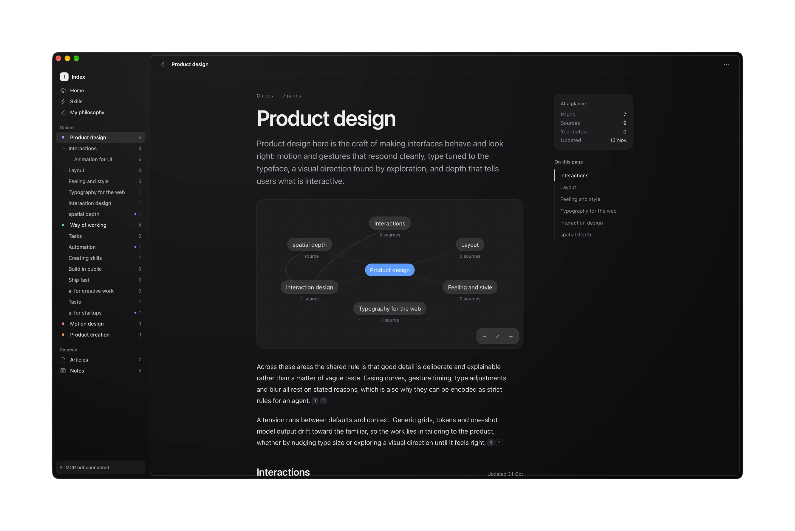
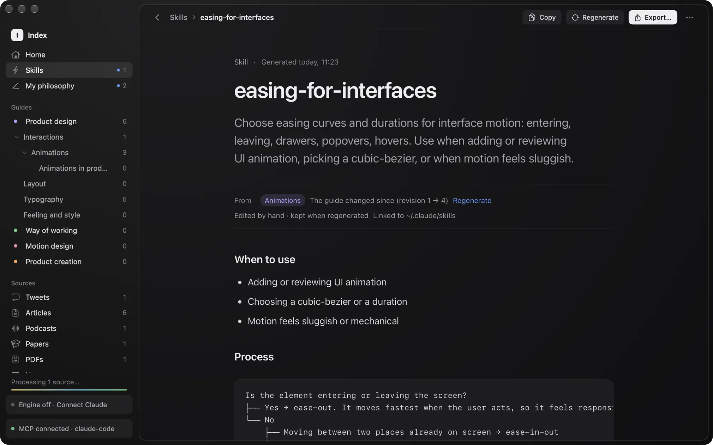

Save in two seconds
Paste a link with ⌘⇧V, drop a PDF, or jot a note. Tweets, articles, podcasts, papers. No folder, no tags, no title to type.
Your personal intelligence layer to improve AI output

Saving sources or notes takes one keystroke. Guides develop in the background that truly capture your taste.
Paste a link with ⌘⇧V, drop a PDF, or jot a note. Tweets, articles, podcasts, papers. No folder, no tags, no title to type.
Each source or note lands in a guide page. Guides autonomously restructure as they grow: sections split, duplicates merge.
Create skills from knowledge domains or use the MCP feature to fetch knowledge for a task you’re working on.
Index runs a local MCP server, so Claude can search your guides while you work. And any guide can become a skill with one click.
Ask an AI for advice and you get the average of the internet. Give it your library and it answers from what you’ve actually read: the sources you trust, the notes you’ve left and the principles you’ve formed, each one cited. You stop re-explaining your taste in every chat, and the advice starts to sound like you.

Every action has a shortcut or lives in ⌘K. Search is the home screen.
Results jump to the exact section, not just the page.
Guides embed live figures: easing curves, spring playgrounds, audio clips.
See what changed and why, with a diff for every rewrite.
When a guide outgrows a page, Index proposes sub-pages. You decide.
Articles, tweets, podcasts with timestamps, papers and PDFs.
Dark by default, with a light theme that follows your Mac.
Built in Swift and SwiftUI. Fast with thousands of sources.
Export SKILL.md folders to ~/.claude/skills. Hand edits survive regeneration.
We’ll only email you about Index. Unsubscribe anytime.